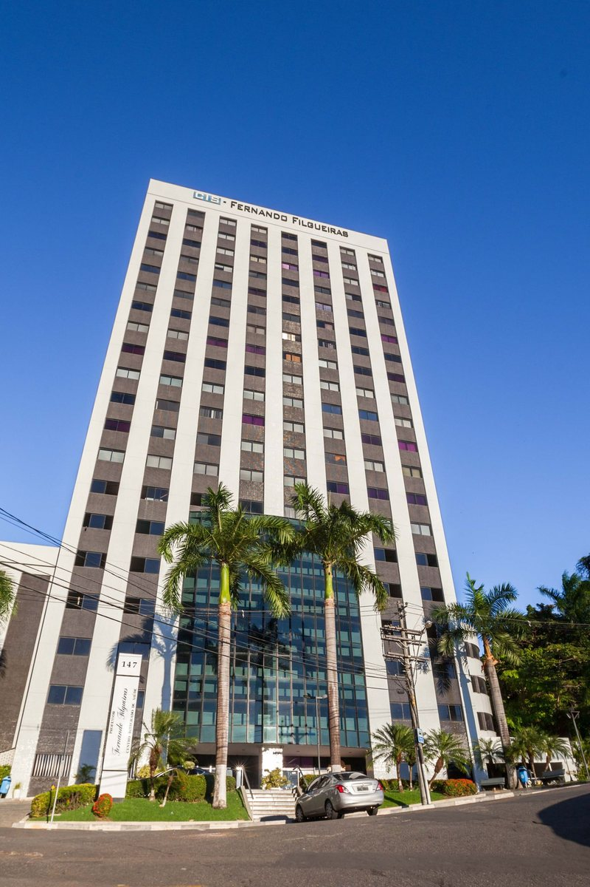
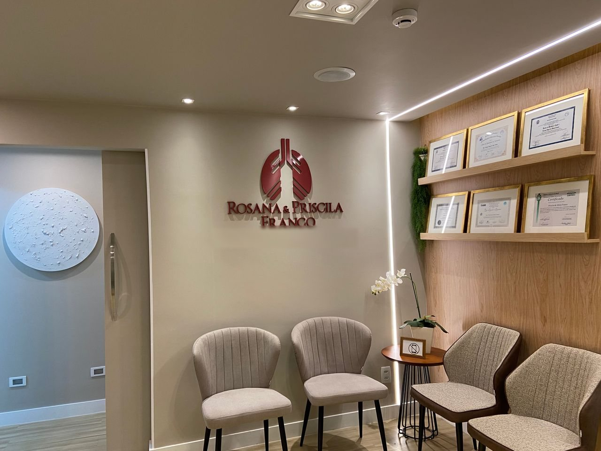
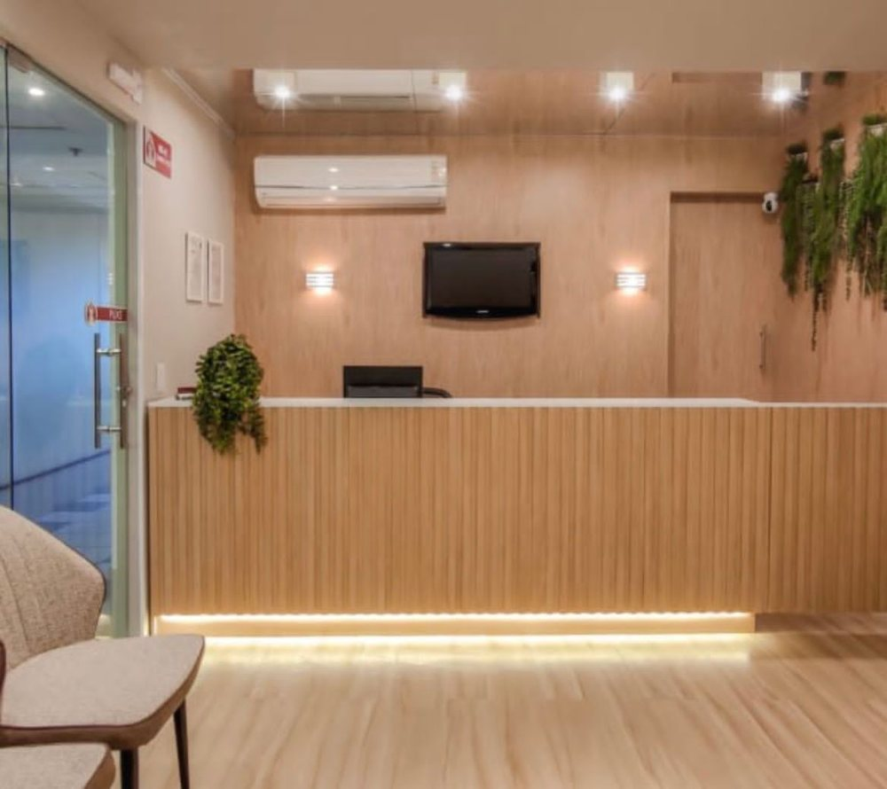
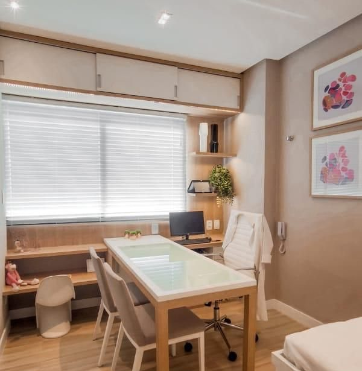
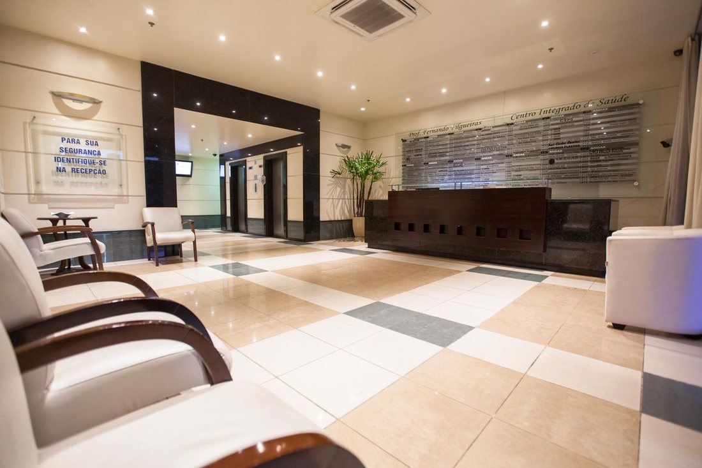

Início · Onde atendemos
Onde atendemos: Rio Vermelho, salas 403 e 404.
Centro Médico Prof. Fernando Filgueiras · R. Eduardo José dos Santos, 147, salas 403/404 · Rio Vermelho · Salvador – BA. Atendimento com hora marcada — confirme o dia e o horário com a equipe pelo WhatsApp.
Presencial
O endereço
Centro Médico Prof. Fernando Filgueiras
R. Eduardo José dos Santos, 147, salas 403/404 · Rio Vermelho · Salvador – BA · CEP 41940-455.
Contato
WhatsApp da recepção (71) 98828-0098 · telefone (71) 3261-0278.

Localização
Mapa e como chegar
A clínica
Madeira clara e luz quente
“Meu consultório é moderno, aconchegante e muito bem equipado.”
“Sobre mim” da Dra. Rosana na Doctoralia · ver a fonte




Fotos da galeria pública da Doctoralia; a marca d’água do projeto de arquitetura foi recortada.
Agendamento
Como agendar
- WhatsAppMande uma mensagem para a recepção: (71) 98828-0098.
- O motivoConte em poucas palavras o motivo da consulta, a idade do paciente e se prefere presencial ou teleconsulta.
- A confirmaçãoCombine o dia, o horário, a médica e as condições de convênio ou atendimento particular.
No dia
No dia da consulta
- Chegue com alguns minutos de antecedência; a clínica fica no 4º andar, salas 403/404.
- Leve documento, exames anteriores, a lista de remédios e as bombinhas que usa.
- Se a consulta for de uma criança, venha com o responsável.
Falta de ar intensa, lábios arroxeados ou dor no peito: procure o pronto-socorro mais próximo ou o SAMU (192).
Dúvidas frequentes
Perguntas comuns
Qual é o horário?
Atendimento com hora marcada — confirme o dia e o horário com a equipe pelo WhatsApp.
Atende plano de saúde?
Confirme com a recepção quais convênios são aceitos para cada médica.
Tem estacionamento?
Confirme com a equipe as orientações de acesso e estacionamento do prédio.
Há teleconsulta?
Sim, segundo o perfil das duas médicas na Doctoralia. Veja como funciona.
Agende
Respirar com calma começa por uma boa conversa.
Consulta com hora marcada no Rio Vermelho ou por teleconsulta. Fale com a recepção da clínica pelo WhatsApp (71) 98828-0098.